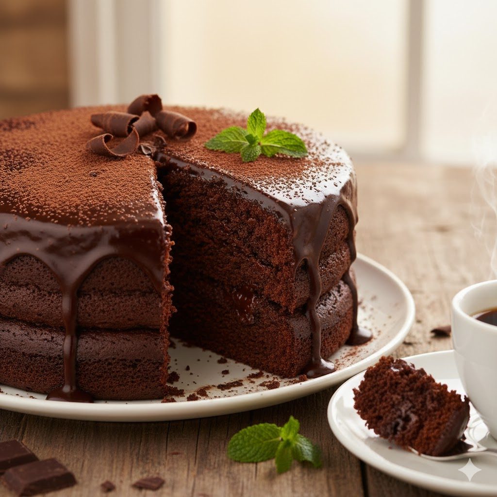

Homepage
Moist Chocolate Cake

Description
This Moist Chocolate Cake is a rich and decadent dessert that's perfect for any chocolate lover.
Made with high-quality cocoa powder and topped with a creamy chocolate ganache, it's sure to
satisfy your sweet tooth.
Ingredients
- 1 and 3/4 cups all-purpose flour
- 2 cups granulated sugar
- 3/4 cup unsweetened cocoa powder
- 1 and 1/2 teaspoons baking powder
- 1 and 1/2 teaspoons baking soda
- 1 teaspoon salt
- 2 large eggs
- 1 cup whole milk
- 1/2 cup vegetable oil
- 2 teaspoons vanilla extract
- 1 cup boiling water
Instructions
- Preheat your oven to 350°F (175°C). Grease and flour two 9-inch round cake pans.
- In a large mixing bowl, combine the flour, sugar, cocoa powder, baking powder, baking soda, and salt.
- Add the eggs, milk, vegetable oil, and vanilla extract to the dry ingredients. Beat on medium speed for 2 minutes.
- Stir in the boiling water (the batter will be thin).
- Pour the batter evenly into the prepared cake pans.
- Bake for 30-35 minutes, or until a toothpick inserted into the center comes out clean.
- Allow the cakes to cool in the pans for 10 minutes, then remove from pans and cool completely on wire racks.
- Frost with your favorite chocolate frosting or ganache once completely cooled.